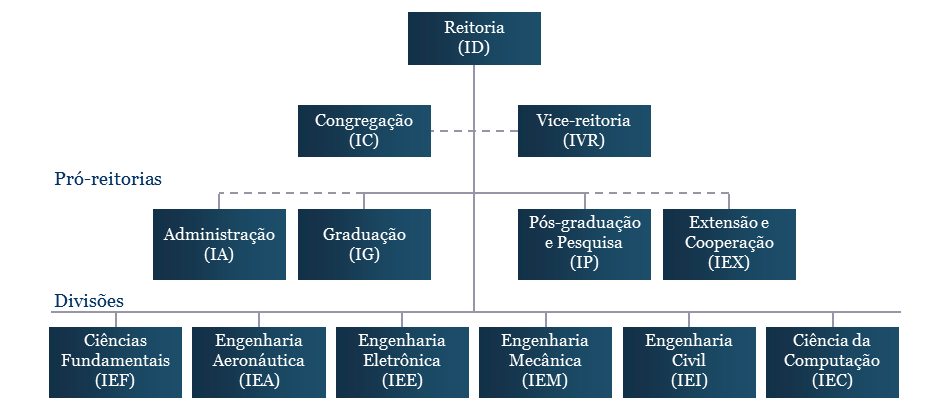

Informações Gerais
O Instituto Tecnológico de Aeronáutica (ITA) é uma instituição universitária pública ligada ao Comando da Aeronáutica (COMAER). Está localizado no Departamento de Ciência e Tecnologia Aeroespacial (DCTA), na cidade paulista de São José dos Campos. Especializado nas áreas de ciência e tecnologia no Setor Aeroespacial, o ITA oferece cursos de:
- graduação em engenharia
- pós-graduação stricto sensu em nível de Mestrado, Mestrado Profissional e Doutorado
- pós-graduação lato sensu de especialização e de extensão.
Nossa Missão
O ITA foi criado em 16 de Janeiro de 1950 com a seguinte missão:
- Ministrar o ensino e a educação necessários à formação de profissionais de nível superior, nas especializações de interesse do campo Aeroespacial, em geral, e do Comando da Aeronáutica, em particular;
- Manter atividades de graduação, de pós-graduação stricto sensu, de pós-graduação lato sensu e de extensão;
- Promover, através da educação, do ensino e da pesquisa, o progresso das ciências e das tecnologias relacionadas com as atividades aeroespaciais.
Disciplina Consciente
Num local onde trabalham, estudam e vivem centenas de pessoas, havendo também uma intensa interação humana, há necessidade de normas que tornem possível a convivência de maneira harmoniosa e agradável. Daí a importância de um conceito tradicional à comunidade iteana, um código de honra e de ética conhecido desde os primeiros anos de existência do ITA como Disciplina Consciente (DC).
Disciplina Consciente, de difícil definição devido aos seus aspectos subjetivos, consiste no entendimento, conscientização, discernimento, vivência e prática das normas vigentes, sem necessidade de fiscalização ostensiva, no esforço pela defesa e manutenção dos ideais iteanos.
As vantahens da DC:
- Há um efetivo comprometimento com a qualidade de formação acadêmica de todos os alunos
- Confere muita liberdade aos alunos e fortalece seu senso de responsabilidade
- Há aumento de eficiência em função da confiança existente
- Cria condições para que o professor tenha uma ideia real do desenvolvimento discente.
Organograma
